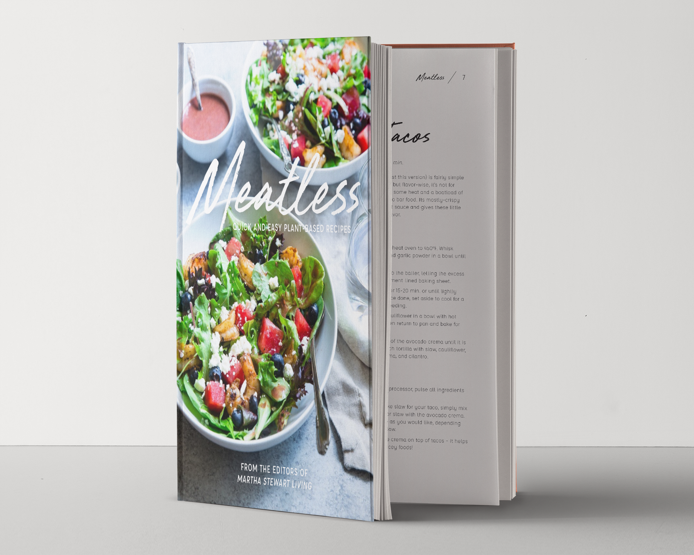
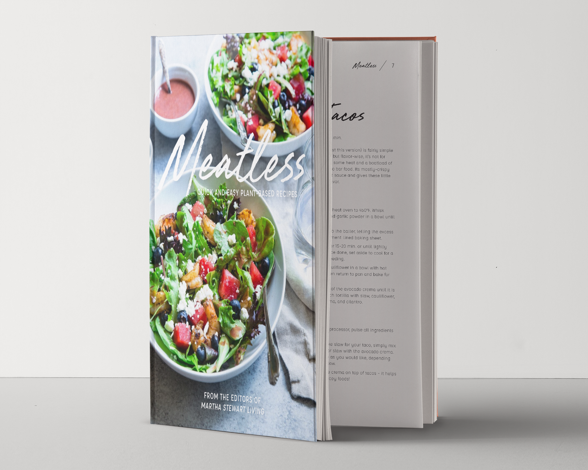

Meatless Cookbook
The goal of this conceptual vegetarian cookbook is to create something that was exciting and fun – much like cooking is for most. Food is something that brings people together, so this cookbook is meant to feel inviting while displaying recipes in a simple way. All recipes and images used are from Martha Stewart and Pinch of Yum cooking blog.
![[Hidden]](img/BreadSpread.png) 

![[Tacos Closeup]](img/TacosCloseup.png)